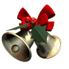

Hi Berkeley
I'm not trying to be chronically online and write your Chrismas card on my stupid website, but my itty bitty kawaii fingers hurt from my midterm essays and I dont want to write on a crumbly piece of paper.
Meeting you is the best thing that has happened to me in 2024. Sorry if this is creepy, but I have not stopped thinking of you since I saw your smile on our orientation day.
When you were added to the groupchat I didn't know that the account belonged to you, and I secretly wished that the account was yours. I remember when you first texted me after the mock trial audition I was so happy to find out that the person in the groupchat, was indeed you.
Since we started texting, I wanted to text you every day after school, and I get so excited everyday, waiting to finally text you.
When I thought that things couldn't have gotten better, hoco came up. I never thought that anyone as pretty as you would've wanted to go to hoco with me, words cannot describe how happy I am to have had you.
When I saw you in your cute dress and smile, it made me happier than the first time I picked up an instrument.
My day instantly brightens when you visit me in the guitar room, and I feel so loved when you made me all those snacks and hung out with me.
And I'll never forget when you suprised me on my concert and brought me flowers. You're the sweetest girl I've ever met.
Your christmas present for me was so generous, and I had so much fun playing the Kirby Dream Land game you got me. The card you wrote telling me how much you love being with me and how much you love me really made me feel greateful for having you, and I hope you know that I feel the same about you.
Have a nice winter break. You're just so sweet and pretty. I want to hold you forever and I love you so much. ♡
Henri (also sorry for making you read so much after a whole midterm)
ok bye
